Build a game with Kimi K3.1 and local 3D AI
This is the setup from my video "I Created My Own Game with Kimi K3.1 Using Only Local 3D AI (Godot + Blender)". Kimi K3.1 Pro runs in the Kimi Code terminal and controls ComfyUI, Blender and Godot through MCP. Every image and 3D asset is generated on my own PC.
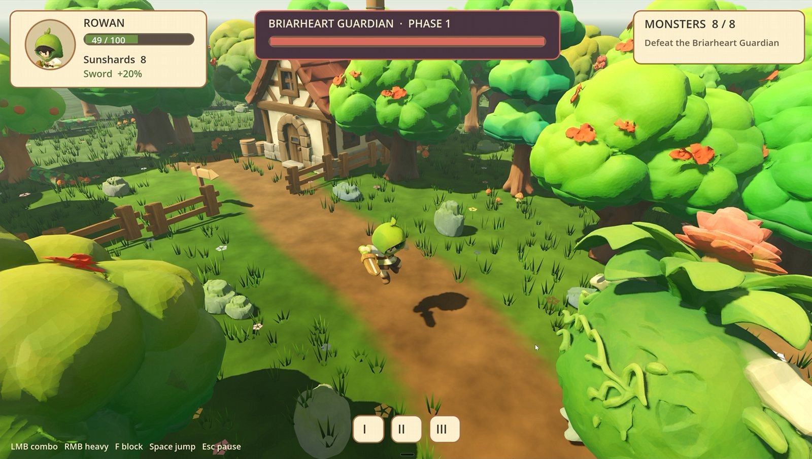
The full story: how the game came together, what went wrong and what I learned is in my blog post on pixel-artistry.com. This site is the step-by-step setup.
What the pipeline does
- Concept images: Kimi writes the image prompts from the game design and generates one clean image per asset with Qwen Image 2.1 in ComfyUI.
- Image to 3D: each image goes through TRELLIS.2 (or Pixal3D), is made watertight, reduced to a low-poly game mesh and textured with UltraTex, all in one ComfyUI workflow that Kimi optimized for game assets.
- Blender cleanup: Kimi works in the open Blender window: real-world size, pivot at the base, facing, collision meshes, export to GLB.
- Godot: Kimi builds the level, the camera, combat, monsters, loot, the boss and the HUD, and writes an automated playtest that plays the game by itself.
The hero was the one thing I did by hand: I rigged and animated it in ActionForge. Everything else was done by Kimi from my prompts.
From first concept to finished game
Work in progress
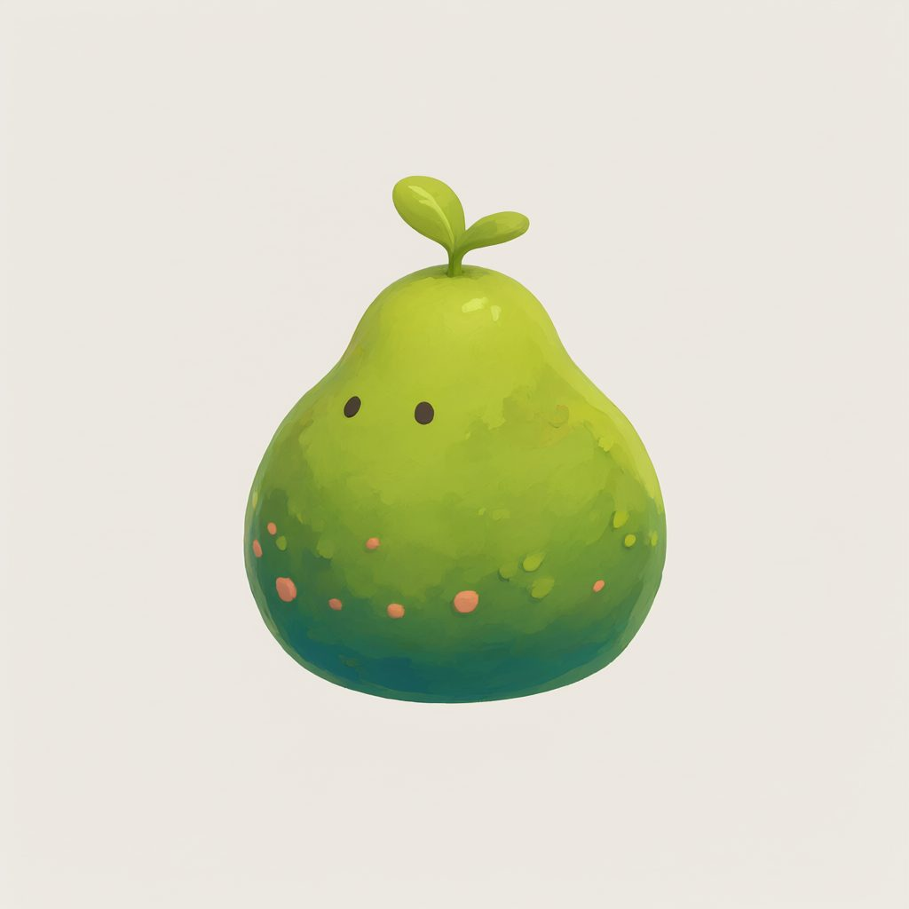
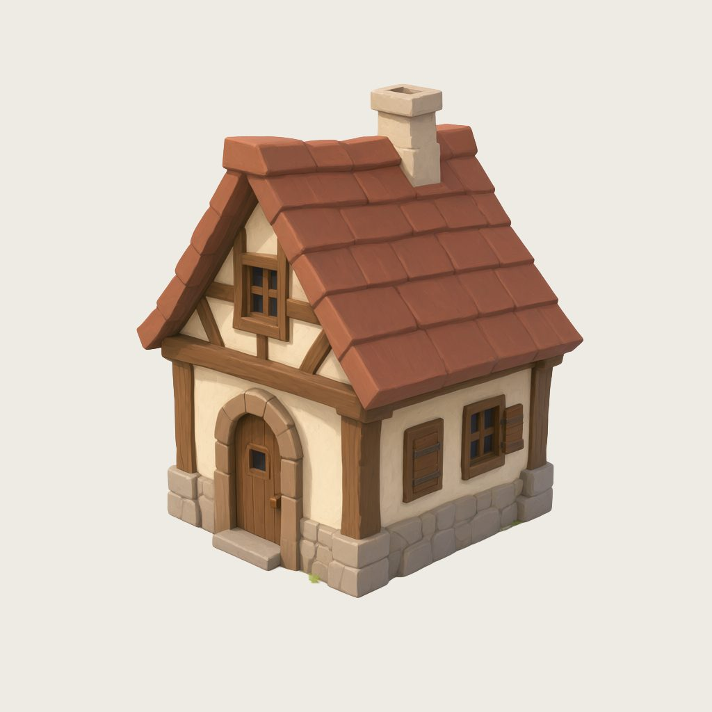
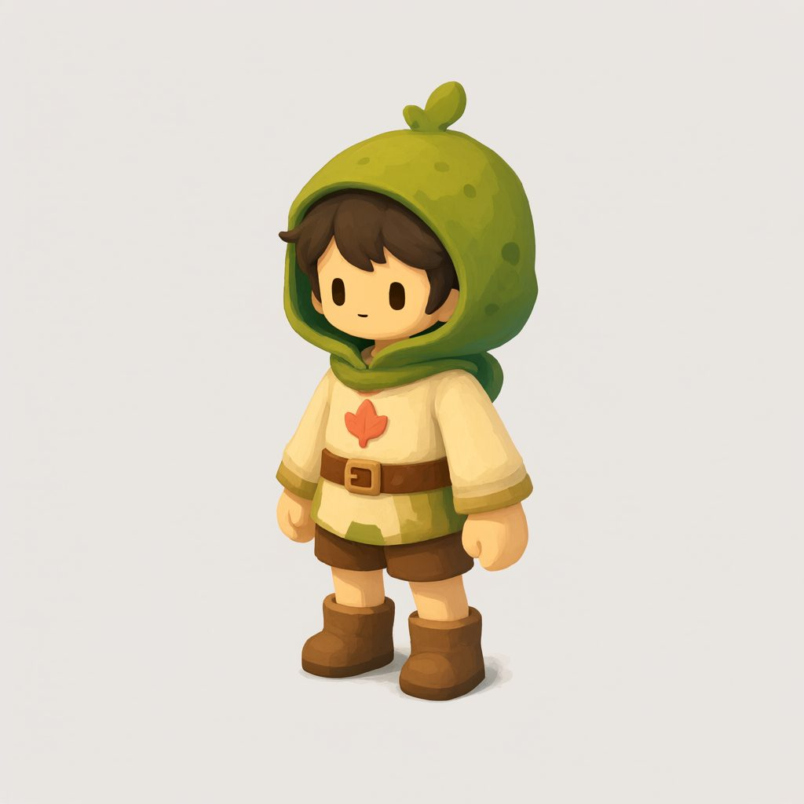
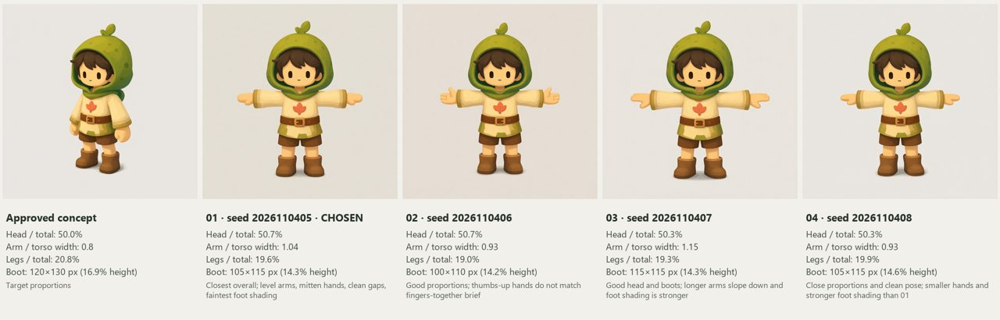
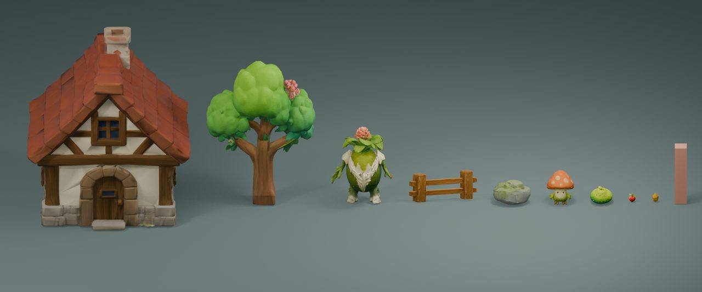
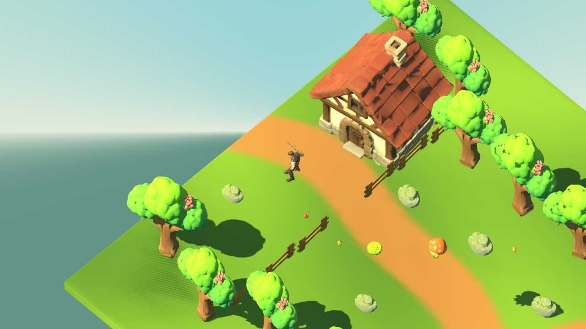
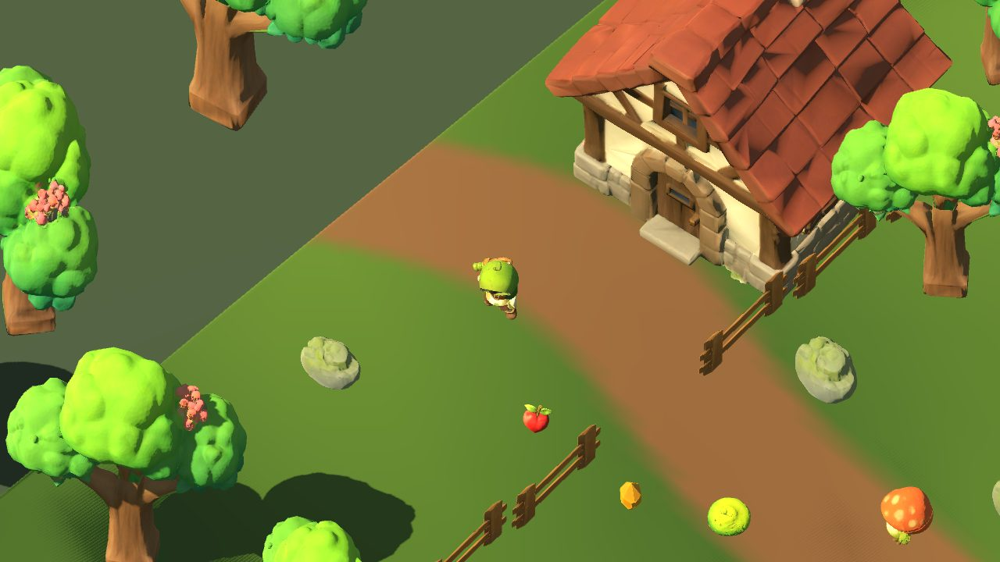
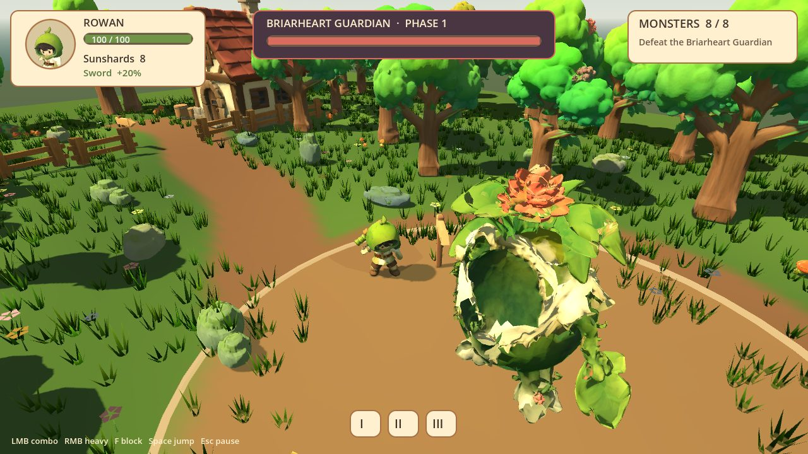
The finished game
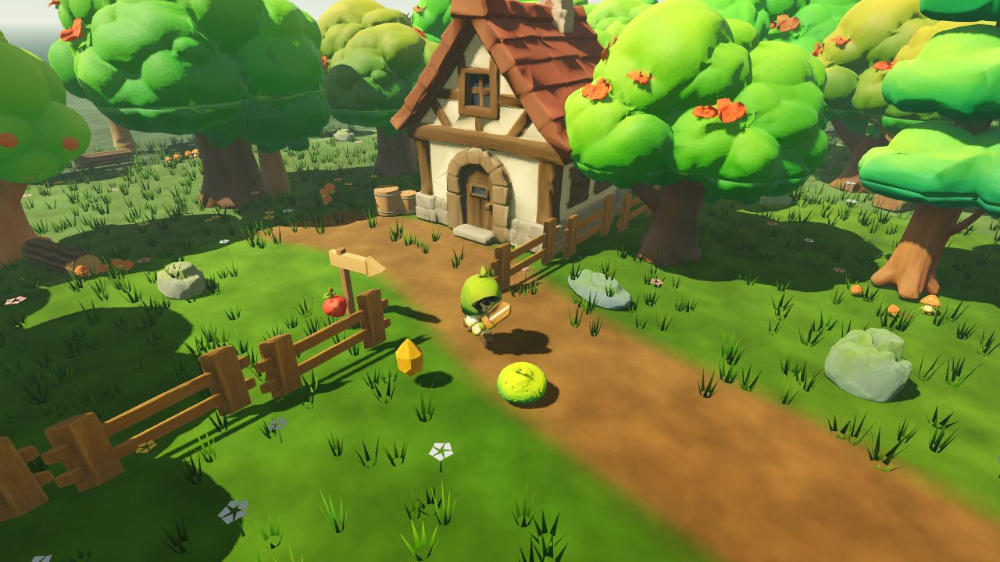
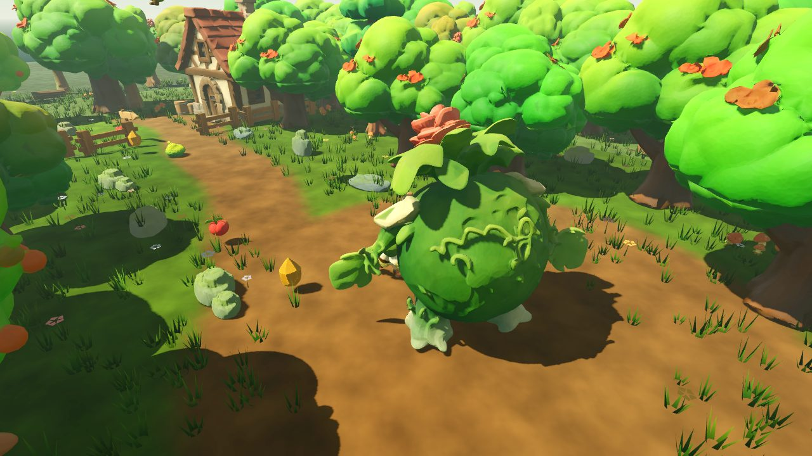
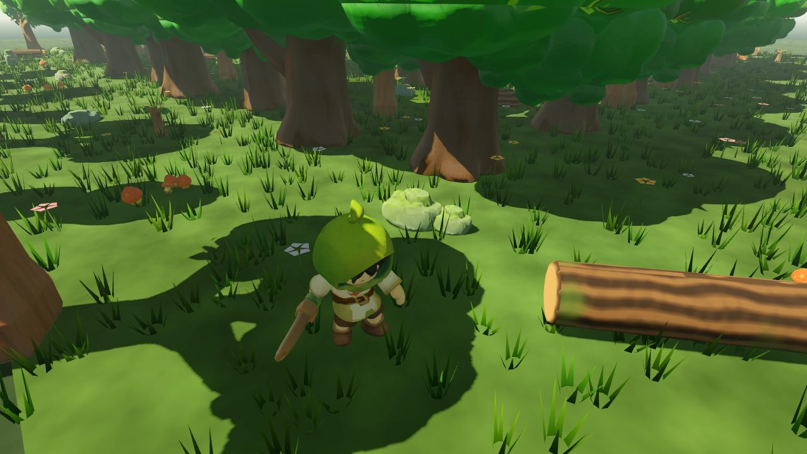
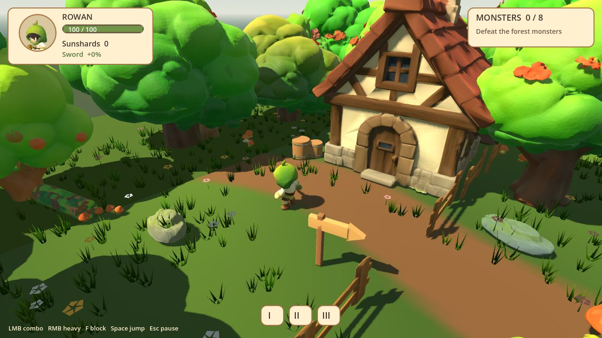
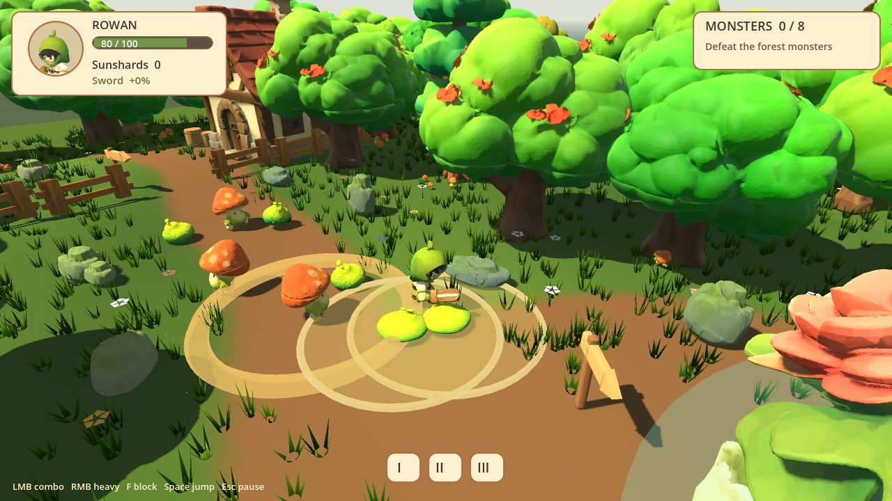
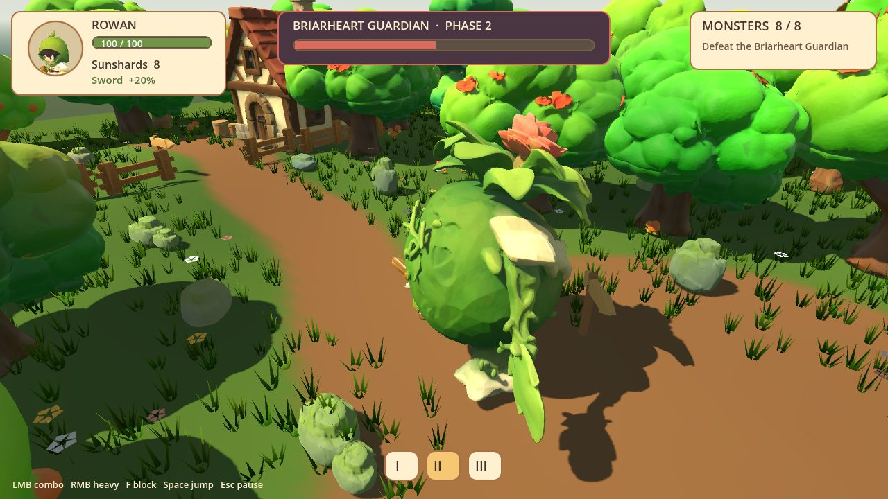
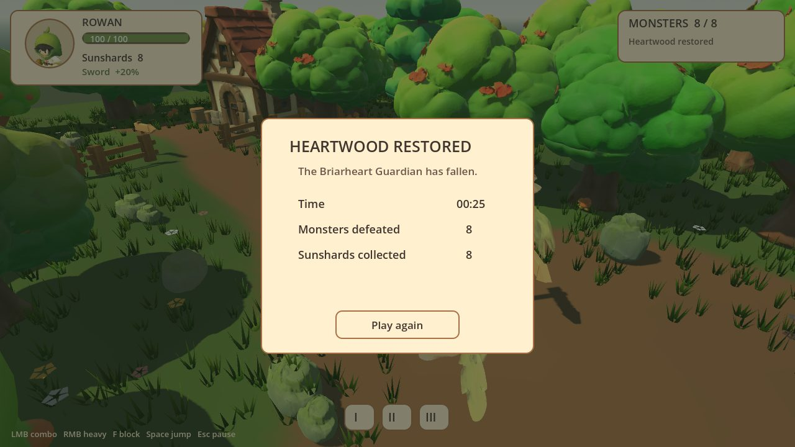
Hardware
- Windows 10 or 11 and an NVIDIA RTX GPU.
- 8 GB of VRAM or more; 12 GB or more is comfortable. The 3D steps peaked at about 7–9 GB in my tests (the cottage at 8.8 GB, 7.0 GB at the lowest settings). Kimi lowered every setting it could; the peak sits in a step with no settings. I built the game on an RTX 5080 with 16 GB.
- 32 GB of system RAM recommended, and a lot of free disk space for the models (around 26 GB for the 3D models alone, plus the Qwen models).
- Kimi itself runs in the cloud: you need a Kimi plan that includes K3.1 Pro. Prompts, code, logs and the screenshots Kimi looks at are sent to Moonshot; the generation, Blender and Godot stay on your PC.
Where to start
1 · Kimi & MCP setup
Install Kimi Code, select K3.1 Pro, and connect ComfyUI, Blender and Godot.2 · ComfyUI
The node packs, models and my four workflows, with what Kimi changed.3 · Prompts
Every prompt I used, in build order, plus a reusable rules block.4 · Tips & links
What worked and what didn't when working with Kimi.The video is sponsored by Moonshot AI, the company behind Kimi. This guide and my opinions are my own.